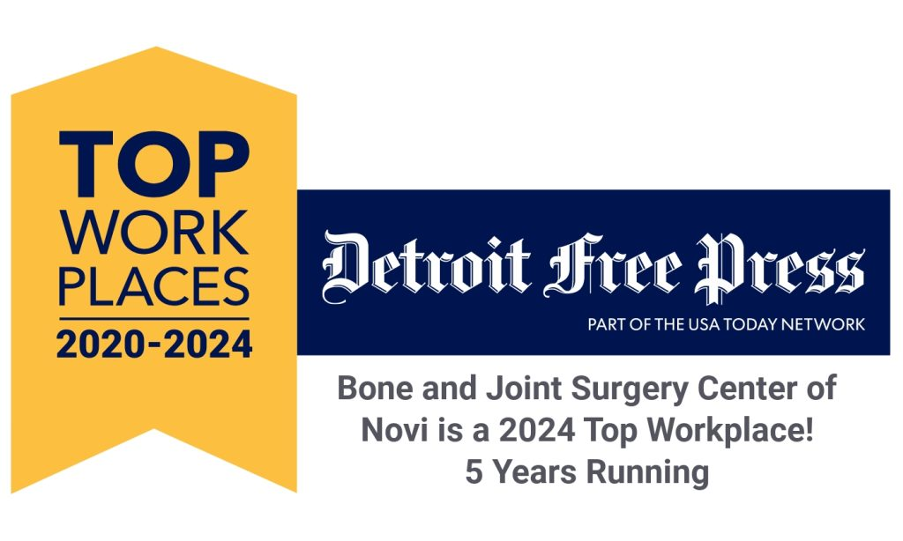

Expert Surgical Care.
Close to Home.
Bone & Joint Surgery Center of Novi — serving our community with warmth, precision, and compassion.
Bone & Joint Surgery Center of Novi — serving our community with warmth, precision, and compassion.
We combine clinical excellence with genuine care — so you feel confident, informed, and at ease every step of the way.
Our board-certified orthopedic surgeons bring decades of combined expertise in joint replacement, spine, and sports medicine procedures.
From the moment you arrive, our compassionate staff treats you like family. We believe great care begins with genuine human connection.
Most procedures are completed the same day, so you can recover comfortably at home — saving time and reducing the stress of an overnight hospital stay.
To provide superior-quality ambulatory surgical care in a warm, friendly environment where every patient feels genuinely valued and cared for.
At Bone & Joint Surgery Center of Novi, we believe that exceptional surgical outcomes and exceptional patient experiences are inseparable. Our team is committed to both — every patient, every procedure, every day.
Learn About UsOur pre-surgical process is designed to keep you informed, prepared, and confident before your procedure.
A member of our clinical team will call you before your procedure to review your health history, medications, and answer any questions.
Learn moreReview our detailed instructions covering what to eat, what to bring, and what to expect on the day of your surgery.
Learn moreDetailed post-operative care guidance to support a smooth, comfortable recovery in the familiar surroundings of your own home.
Learn moreOur surgeons are highly trained specialists who put your health and comfort above all else.

Orthopedic Surgery
Board-certified with fellowship training in joint replacement and reconstruction. Committed to restoring patient mobility and quality of life.

Spine & Pain Management
Specializing in minimally invasive spinal procedures and interventional pain management with a focus on rapid recovery and lasting relief.

Sports Medicine & Arthroscopy
Fellowship-trained in arthroscopic surgery and sports-related injuries, helping patients of all activity levels get back to what they love.

Five consecutive years of recognition as a top workplace in Michigan — a reflection of the dedicated team that makes ASC Novi such a special place to work and to receive care.